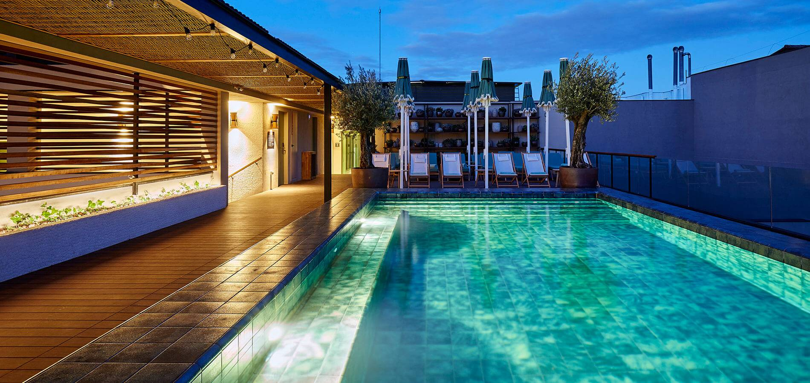

HOTELES EN BARCELONA
Si planea hospedarse en un hotel durante su viaje en Barcelona, en cualquier parte de la ciudad puede encontrar una habitación para usted y su pareja, su familia o sus amigos. La oferta de hoteles y habitaciones en el área metropolitana de Barcelona es realmente amplia, alrededor de 31.000, en muchos hoteles distribuidos según las necesidades de los huéspedes.
Dependiendo de la zona de la ciudad que desea permanecer los precios de las habitaciones cambian, así como la calidad y las instalaciones, como sucede en todas partes. Aunque Barcelona tiene una gran diversidad de precios, según las necesidades y los servicios ofrecidos o la ubicación. Frente a la playa, cerca de Plaza Catalunya o en los distintos barrios con su propia identidad se puede encontrar una habitación por un precio razonable.